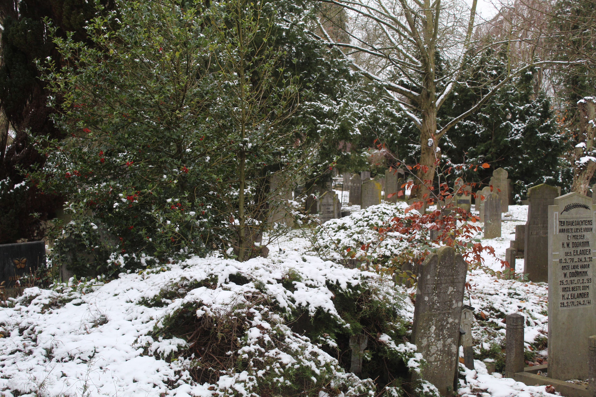
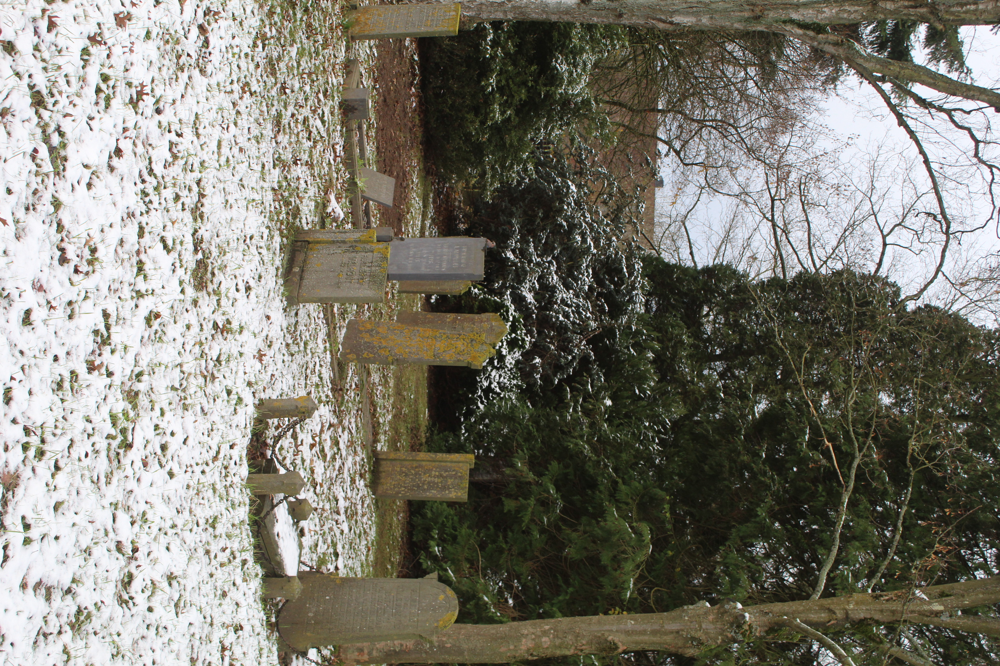
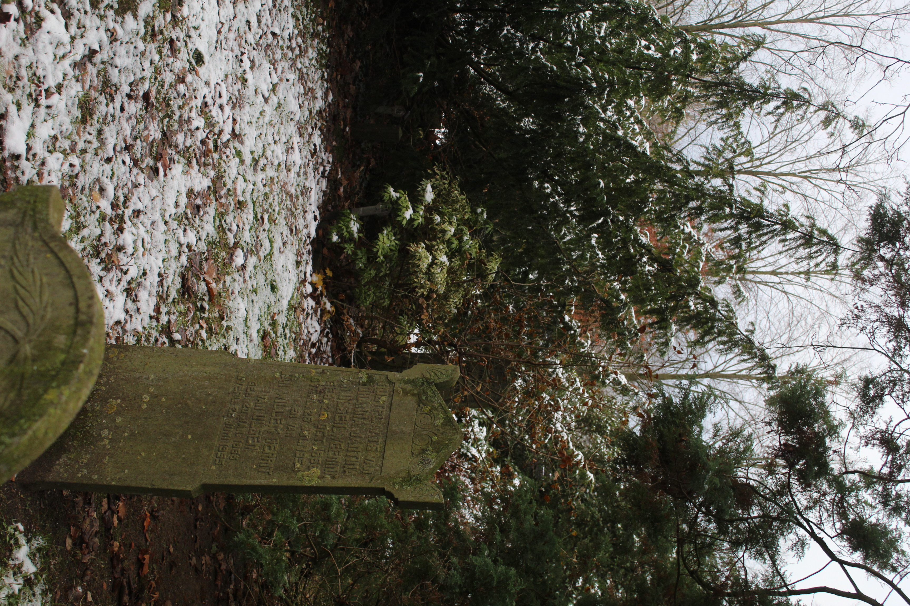
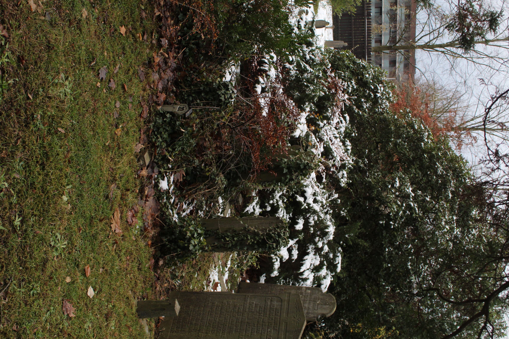
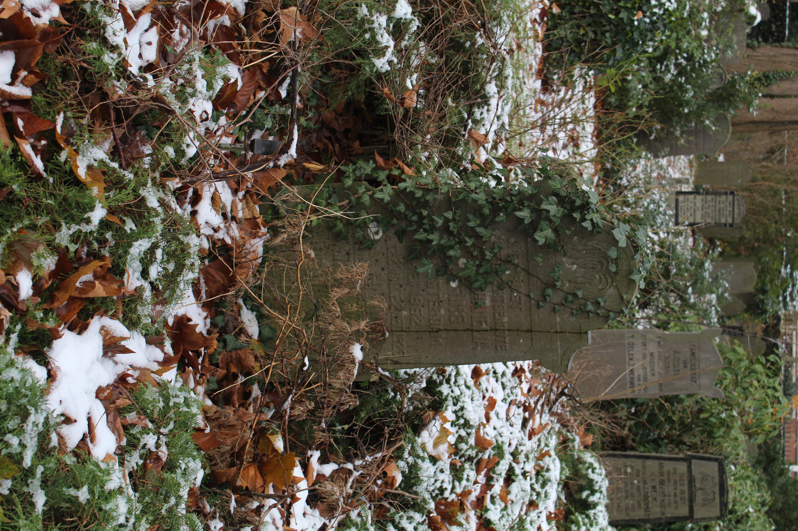
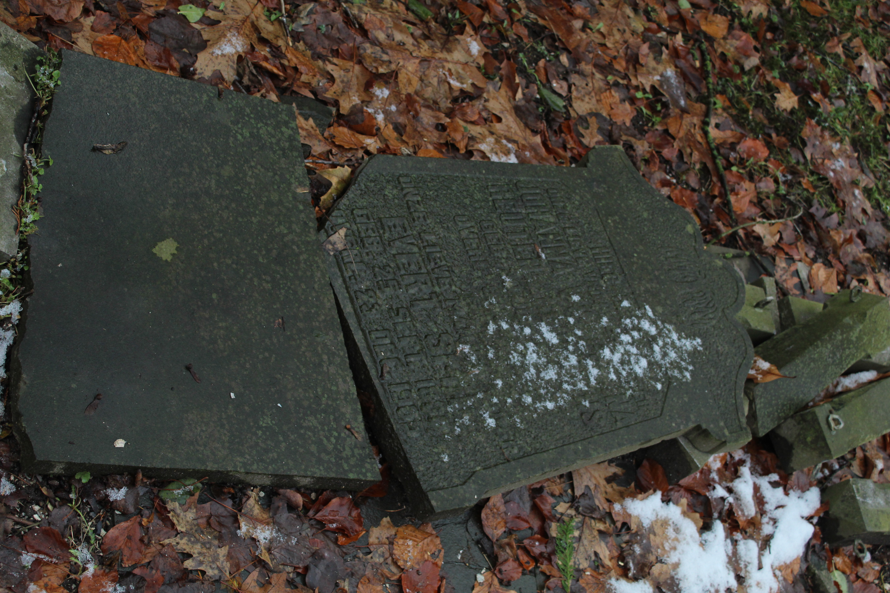
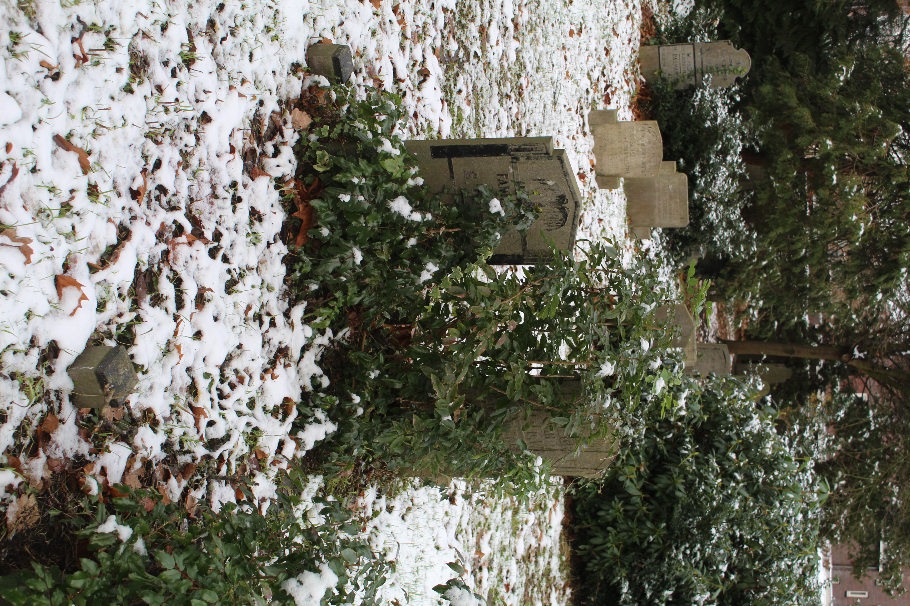
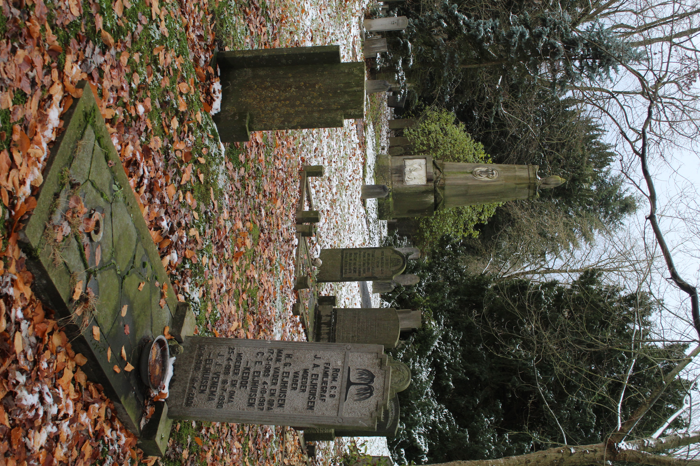
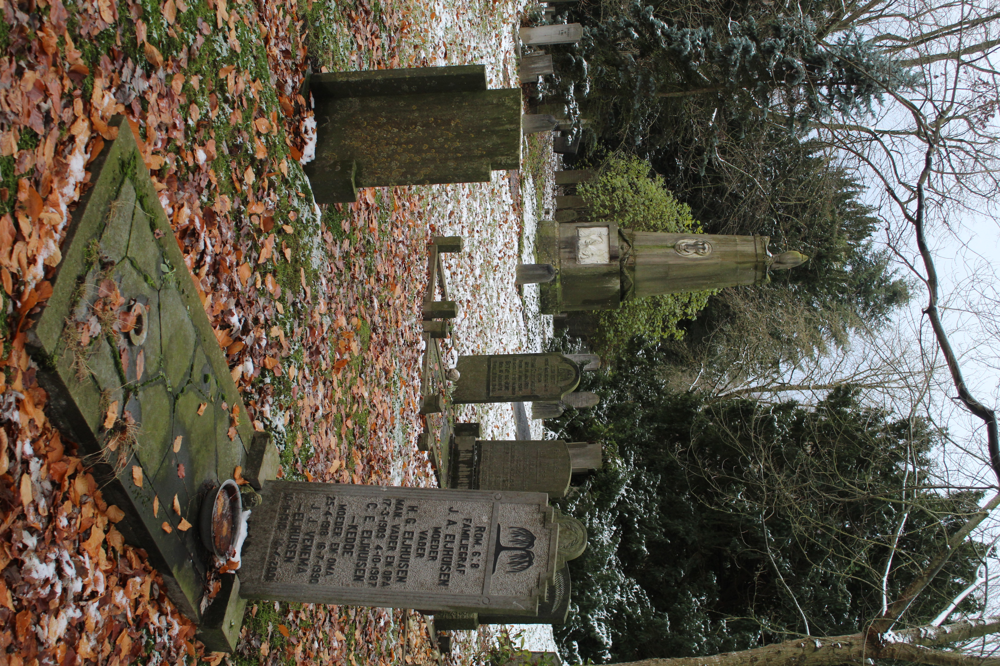

Is death present in this space because it's representated? Or is it because there are no (living) humans around?




These are some overgrown graves I found in a graveyard nearby my house. It's a very peacefull place, a place where time stands still. I think the decay of some graves adds up to that feeling of peace. Does this form of decay give peace in other places?


 

For me decay gives a sence of peace because there’s something that overcame the human control.